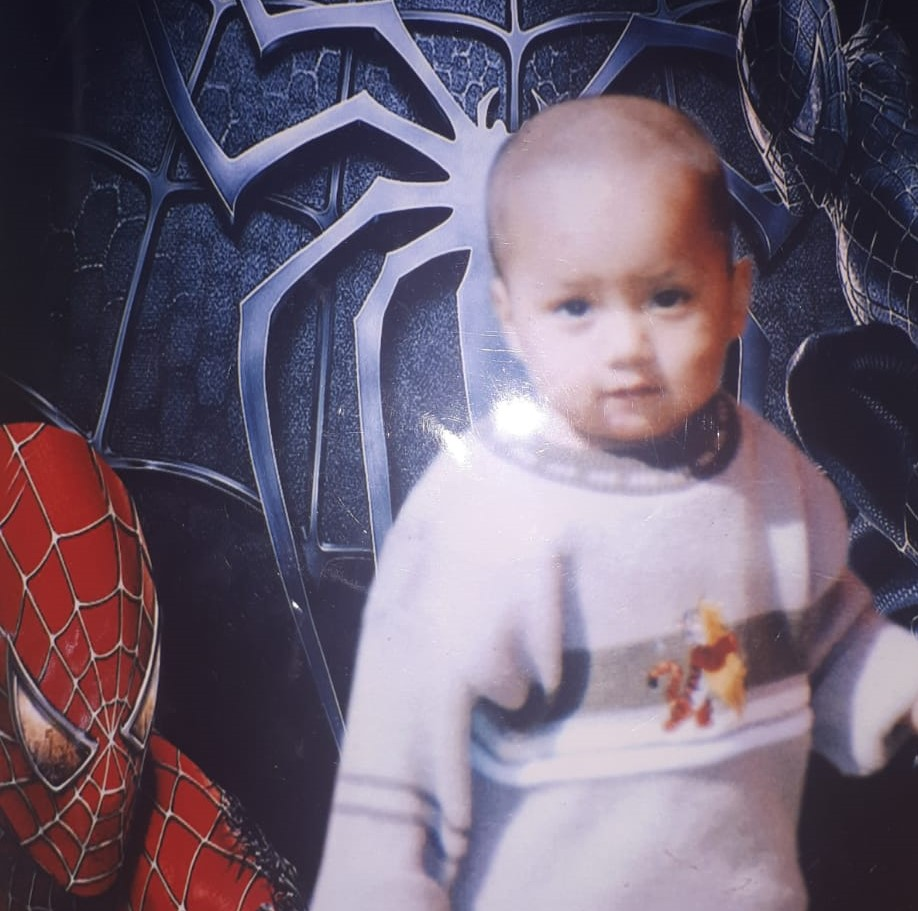
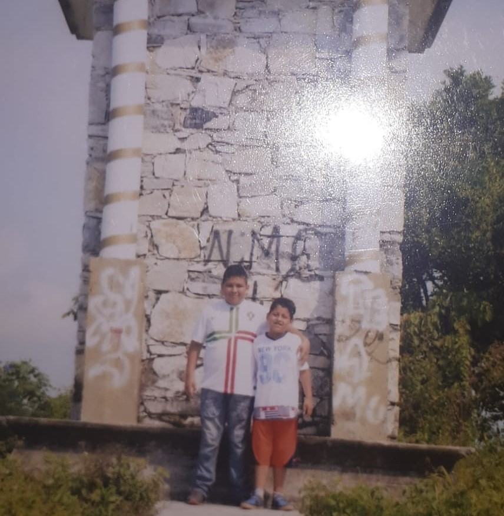

Mis primeros años
 |
 |
Mi nombre es Luis Miguel Sotero Francisco, nací el 22 de junio del 2004 en un pueblo llamado olintla es el estado de puebla, mis padres se llaman Luis Sotero Santiago y Dolores Francisco Rodríguez. Al cumplir 2 meses mis padres y yo nos mudamos a la ciudad de México donde vivimos por mucho tiempo, mi primera palabra que dije fue mamá, a los 2 años empecé a caminar y a hablar, poco a poco fui desarrollando la habla.
Mi estancia en la primaria
Poco antes de que yo entrara a preescolar, mas exacto cuando tenia 3 años y 9 meses. Yo estaba entusiasmado por entrar a la escuela, pero 15 días después de entrar ya no quería ir, cuando cumplí cuando tenia 5 años me quitaron mi primer diente ya que tenía muchas caries a los 6 entre a la primaria y ahí luego hice amigos, uno de ellos se llamaba Jorge, el fue mi amigo durante todo el tiempo que estuve en la primaria, en primero recibí mi primer reconocimiento por buenas calificaciones , en segundo grado de primaria entre a una taller de ajedrez y pocos meses después fui a un torneo donde quede en tercer lugar, al entrar a tercero entre a una taller de baile el cual no me gusto mucho y me Sali poco meses después de entrar y al entrar a cuarto grado entre a otro taller. El cual era el de banda de guerra ahí estuve hasta que Sali de la escuela.
Mi secundaria hasta estos momentos
Al salir de sexto no hicieron una fiesta de despedida para sexto y esa vez fue la ultima vez que vi a aquellos amigos y nunca los he vuelto a ver, en ese tiempo mis papas estaban pensando si mudarnos al estado de México o no, y pues yo hice un examen de admisión a unan escuela de allá llamada la 30-30 y me milagrosamente me había quedado en esa escuela pero de repente mis padres decidieron mudarse y perdí mi oportunidad de estar en esa escuela y entre a una escuela del estado de México llamado Otilio Montaño.
Al entrar ahí no conocía a nadie, pero en el instante hice un amigo llamado Gabriel, el hasta la actualidad es mi mejor amigo curse ahí los tres años uno tras otro con buenos promedios y aquí en estado de México ya hice una vida al terminar la secundaria yo estaba nervioso de hacer mi examen de admisión, pero tiempo después de hacerlo me dieron los resultados y entre, en ese momento me puse muy feliz al igual que mis padres tanto que hasta ellos me compraron una moto que ahorita tengo. Actualmente estoy cursando el segundo semestre de preparatoria y estoy muy feliz de estar en esa escuela ya que es una muy buena oportunidad de seguir estudiando y acabar una carrera en algún futuro